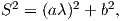
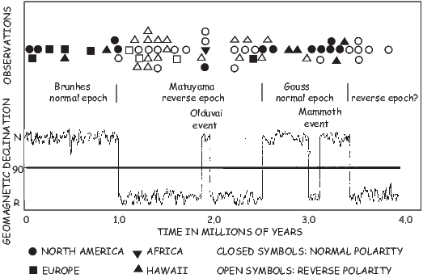

Figure 15.2: Map of the pattern of magnetic anomalies off northwestern
North America. [Figure from Mason and Raff, 1961.]
BACKGROUND: Browse the website: http://stratigraphy.org
The geological time scale is a list of ordered events placed in a temporal/spatial context. Time is broken into Eons (e.g., Phanerozoic, Proterozoic), Eras (e.g., Mesozoic, Cenozoic), Periods (e.g., Cretaceus, Paleogene), Series (e.g, Oligocene, Miocene) and Stages (e.g, Messinian, Zanclean). The fundamental unit, the stage, is ideally defined by its base at a particular place and many such Global Standard Section and Points, or GSSPs have been identified. Numerical ages are attached to these stage boundaries by a variety of methods. Some methods have explicit numerical age control (e.g., from the predictable decay of radioactive isotopes or variations in climate caused by the relationship of the Earth, the sun and the major planets), while others have only relative age information (e.g., the progressive change of fossil assemblages, or the identification of contemporaneous events in the geological record). Nmerical ages are almost always estimated by correlation, interpolation, and/or extrapolation. As such, the geological time scale is a work in constant revision. The website of the International Stratigraphic Commission at http://stratigraphy.org has a wealth of information about ages, stages, GSSPs, etc.
One of the important tools in assembling the geological time scale is the geomagnetic polarity time scale (GPTS). Identification of a particular polarity reversal allows direct correlation of isochronous events between continental and marine sequences, between northern and southern hemispheres and between the Pacific and Atlantic realms. Apart from the identification of unique ash layers or the very rare geochemical tracers like an iridium spike, there is no better way to tie together the stratigraphic record. In fact, it is increasingly the case that stages are defined by certain polarity intervals, as opposed to biostratigraphic information (see for example, the definition of the Messinian Stage on the http://stratigraphy.org website.) In this chapter we will review how the modern GPTS was constructed and will briefly consider some applications of the GPTS to geological problems.
Scientists discovered reversely magnetized rocks in the early 20th century (see Chapter 14), and some suspected that there was a globally synchronous pattern of polarity reversals (e.g., Matuyama, 1929). However, it was not until combined studies of both age (with the newly developed age dating technique using the decay of radioactive potassium to argon) and polarity, from globally distributed lava flows, that the first Geomagnetic Polarity Time Scales (GPTS) began to take shape (Figure 15.1; see e.g., Cox et al., 1963, 1964).

Cox et al. (1964) broke the polarity sequence into times of dominantly normal polarity (i.e., field vector more or less parallel to today’s field) and times of dominantly reverse polarity (i.e., field vector more or less antipodal to today’s field). They called these time units “Epochs” (note that they are now known as Chrons). The first three epochs were named after some major players in geomagnetism: B. Brunhes (who first discovered reversely magnetized rocks), M. Matuyama (who first demonstrated that the reversely magnetized rocks were older than the normal ones), and K.F. Gauss (who worked out the first geomagnetic field model). A fourth was later named after W. Gilbert (who first realized that the Earth itself was a magnet). Cox et al. (1964) also recognized the existence of shorter intervals which they called “Events” (e.g., the Olduvai and Mammoth events in Figure 15.1; note that events are now known as sub-chrons). These shorter intervals are traditionally named after the place where they were first documented.
Time scales constructed in the manner of Cox and colleagues that pair dates with particular polarity boundaries are necessarily limited by the uncertainty in the dating of young basalts. In the early 60’s this uncertainty exceeded the average duration of polarity intervals for times prior to about five million years (except for the very long intervals of a single polarity like the Permo-Carboniferous Reverse Superchron, otherwise known as the “Kiaman” interval which lasted over 50 million years).

The publication of Cox et al. (1963) (see also McDougall and Tarling, 1963), essentially laid to rest doubts about the validity of geomagnetic reversals and sketched the rudiments of the first GPTS. Shortly thereafter, Vine and Matthews (1963) put ideas about polarity reversals and the bizarre “magnetic stripes” in marine magnetic anomaly data (e.g., Mason and Raff, 1961; Figure 15.2) together as strong support for the notion of sea floor spreading. The realization that the marine magnetic anomalies were a record of polarity history meant that the template for the pattern of reversals could be extended far beyond the resolution of the K-Ar method. It was not long before such a template for paleomagnetic reversals based on magnetic anomalies (numbering 1 to 31) was proposed (e.g., Pitman and Heirtzler 1966; see Figure 15.3). By assigning an age of 0 Ma to the ridge crest, an age of 3.35 Ma to the of the Gauss/Gilbert boundary (stars in Figure 15.3) and assuming constant spreading for the South Atlantic anomaly sequence, Heirtzler et al. (1968) extended the GPTS to about 80 Ma. The age of anomaly 31 was estimated to be about 71.5 Ma. The truly astounding thing is that the currently accepted age for anomaly 31 is about 68 Ma (e.g., Cande and Kent, 1995) a difference of only a few percent!

In a parallel effort to the marine magnetic anomaly work, several groups were investigating the magnetic stratigraphy of deep sea sediment cores (e.g., Harrison, 1966 and Opdyke et al. 1966). In Figure 15.4 we show the record of inclination versus depth of Opdyke et al., (1966) obtained from a core taken off the coast of Antarctica. Upwardly pointing (negative) inclinations are normal and positive inclinations are reversely magnetized. This polarity pattern was correlated to the then available time scale which included the new “event” known as the Jaramillo (Doell and Dalrymple, 1966) and revised age estimates for the “epoch” boundaries.

The polarity sequence from magnetostratigraphic records was extended back into the Miocene by Opdyke et al. (1974, see Figure 15.5). The epochs, defined by the magnetostratigraphy could not easily be correlated to the anomaly data shown in Figure 15.3 and the two numbering schemes (anomaly numbers and epoch numbers) remained separate until the correlation between the two was deemed sufficiently robust.
By the early 70s the large scale structure of the marine magnetic anomalies had been sketched out. There was a young set numbered 1-34 which terminated in a vast expanse of oceanic crust with no correlatable anomalies known as the Cretaceous Quiet Zone or CQZ. The Cretaceous Quiet Zone is well established as being a period of time with very few (or no!) reversals (see Helsley and Steiner, 1969). The CQZ is synonymous with the Cretaceous Normal Superchron, or CNS and extends from the middle of the Santonian (~ 83 Ma; Cande and Kent, 1995) to the middle of the Aptian stage (~ 121 Ma; He et al., 2008). On the old end of the CQZ was another set of anomalies, known as the M-sequence (e.g., Larson and Heirtzler, 1972). These extended from M0 (which bounds the old end of the CQZ) to M25 based on easily recognizable marine magnetic anomalies. Unlike the younger set of anomalies, the M-sequence anomalies are associated with reverse polarity intervals.
Because the oldest sea floor is about 180 Ma and the oldest marine magnetic anomaly sequences are very poorly expressed (a region known as the Jurassic Quiet Zone), polarity intervals older than about M29 were originally defined using various magnetostratigraphic sections obtained from land exposures. The M-squence of polarity intervals was extended to about M39 using sections from Spain and Poland. The M-sequence has now been fairly firmly tied to geological stages and thereby calibrated in terms of numerical ages (see e.g., Channell et al. 1995). Recently, Tivey et al. (2006) bravely defined marine magnetic anomalies back to M44 using deep-towed magnetometer data and suggested that the JQZ was a time of extremely rapid polarity reversals.
As we go back farther in time, the GPTS necessarily becomes more sketchy. Long sequences of stratigraphic sections are required with few gaps and reasonably constant sediment accumulation rates. Such sequences are difficult to identify and piece together so the GPTS will only slowly be completed. Painstaking acquisition of overlapping stratigraphic sections (see, e.g., Kent et al., 1995) will be the basis for future extensions of the GPTS. Stay tuned – this is very much a work in progress and is advancing steadily.

An interesting aspect to the magnetostratigraphic work typified by Opdyke et al. (1966) was the identification of biostratigraphic zones (Ω to ϕ in Figure 15.4) based on faunal assemblages in the core. These zones are therefore tied directly to the magnetostratigraphic record. The addition of biostratigraphy to the GPTS brought new possibilities for the calibration of the time scale in that certain boundaries could be dated by radioisotopic means using datable layers (e.g., ash beds) within stratigraphic sections. If a particular well dated biostratigraphic horizon could be tied to the magnetostratigraphic record, then the associated numerical ages could be attached to the GPTS. Exploiting this possibility, LaBrecque et al. (1977) used the magnetostratigraphic record in Italian carbonates (e.g., Alvarez et al., 1977) which tied the Cretaceous/Tertiary (K/T) boundary to a reverse polarity zone between two normal polarity intervals correlated with marine magnetic anomalies 29 and 30. The accepted age for the K/T boundary at the time was 65 Ma (van Hinte, 1976) which is virtually identical to the currently accepted age of 65.5± 0.3 Ma (Gradstein et al., 2004), so ages for the anomalies numbered 1-34 could be estimated by interpolation and extrapolation. Note that anomaly 14 is now thought to be a cryptochron (S. Cande, pers. comm.) and has not been included as a numbered anomaly in timescales since LaBrecque et al. (1977).


Until 1990, the GPTS was dated using numerical ages based on the decay of radioactive elements (largely the K/Ar method). An alternative approach to dating stratigraphic sequences long in use is based on the climatically induced changes in lithology or stable isotopic records in sediments that are caused by variations in the Earth’s orbit around the sun. The relationship of the Earth’s orbit to the sun results in changes in the amount and latitudinal distribution of solar radiation (insolation) reaching the Earth as a function of time. According to the Milankovitch hypothesis (e.g., Hays et al. 1976), changes in insolation at high northern latitudes vary with periodicities reflecting precession (with a beat of around 21 kyr), obliquity (~ 40 kyr) and eccentricity (~ 100 kyr). These changes in insolation resulted in measurable changes in the chemistry of the oceans and atmospheres and left an indelible mark on the lithostratigraphy (e.g., variations in carbonate) and the isotopic ratios of oxygen (the light isotope 16O gets preferentially incorporated into glacial ice at high latitudes, leaving the oceans richer in 18O.) Because the precession, obliquity and eccentricity of Earth’s orbit can be robustly predicted as a function of age at least for several million years (and perhaps even 10s of millions of years – see Laskar et al., 2004), identification of these patterns in the stratigraphic record allows numerical ages to be attached to the sedimentary sequence. This is a method known as astrochronology. Starting with Shackleton (1990) and Hilgen (1991), astrochronology has been applied to the GPTS (see e.g., Figure 15.6).
Astrochronology may be essential for extending the time scale back into deep time. Using a series of drill cores with overlapping sections, Kent et al. (1995) defined a set of polarity intervals labelled E1 to E23 (see Figure 15.7). Kent and Olsen (1999) interpreted lithologic cycles within sections as 400 kyr climatic cycles and calibrated their composite depth scale to time. Their resulting time scale is shown to the right in Figure 15.7.
The Epoch/Event terminology was changed to Chron/sub-chron in 1979 by international agreement (Anonymous, 1979). Along with chrons and sub-chrons, the international subcommission defined superchrons. Cande and Kent (1992) later defined cryptochrons. Superchrons are extremely long polarity intervals, such as the Kiaman (also known as the Permo-Carbaniferous Reverse Superchron or PCRS) which lasted from 298 to 265 Ma (Gradstein et al., 2004) and the Cretaceous Normal Superchron (CNS: 83-121 Ma in Gee and Kent, 2007). Cryptochrons are tiny wiggles in the marine magnetic anomaly record that are too short to be unequivocally interpreted as full reversals (i.e., shorter than about 30 kyr). Some of these may be related to geomagnetic excursions, microchrons or just periods of low geomagnetic field strength (see Chapter 14.)
In an attempt to “rationalize” the Neogene chron (event) terminology (which numbered chrons from 5-22) and the anomaly terminology (running from 1 to about 6C), Cande and Kent (1992) followed the convention of Tauxe et al. (1983) and broke the time scale into chrons and sub-chrons based on the anomaly numbering scheme distinguishing chrons from anomalies with the letter “C”. The “C” stands for “Chron” and is meant to distinguish the time unit from the anomaly. Because the anomaly numbering system only had 34 anomalies from the end of the CNS to the present, many more subdivisions were required, particularly in the very “busy” interval between Anomalies 5 and 6. These anomalies were denoted 5’, 5A, 5AA, 5AB and the like. For a complete listing of the current GPTS, please refer to Table 15.1. This is the time scale of Gee and Kent (2007) which is a hybrid of the Cande and Kent (1995) and the Channell et al. (1995) time scales with the addition of sub-chrons recognized by Lowrie and Kent (2004).
In the interval from 83 Ma to the present, the anomalies are associated with normal polarity, so the chrons are designated C1n, C1r, C2n, C2r for the normal associated with Anomaly 1 (the Brunhes), the dominantly reverse interval between Anomaly 1 and Anomaly 2 (the Olduvai) and the dominantly reverse interval between Anomalies 2 and 2A (the Gauss). There are many more subchrons than this. For example, the Jaramillo and a little subchron known as the Cobb Mountain are within subchron C1r. Subchrons can be further subdivided; the Jaramillo is now known as C1r.1n. And it gets worse. A cryptochrons is designated with a “-” after the subchron within which it lies. One such, the Cobb Mountain excursion(1.201-1.211 Ma) is labelled C1r.2r-1n in the most recent time scale. Because of the complexity of the anomaly-based naming scheme, and the continous discovery of new features, the GPTS has become a nightmare of chron and sub-chron names like C5r.2r-2n or C5ADr where the “n”s and “r”s refer to polarity and the “.1”s, “.2”s and so on refer to the sub-chrons within chrons (e.g, C4n). The C5r.2r-2n is, for example, the second normal cryptochron within the second reverse polarity sub-chron of Chron C5r. The M-sequence names follow on from the younger chrons. The youngest of these is therefore CM0r (see Table 15.1).
For reference, we include the dates from a recent GPTS in Table 15.1. As an example of the detailed correlations between the polarity time scale and various biological time scales, we show the Neogene portion from Lourens et al. (2004) in Figure 15.8. For details, the reader is referred to the original reference. Please note that the time scale is a consensus document that balances a tremendous amount of information from a variety of sources. As such, it is subject to change, although change should not be frequent or drastic.

An important application of having a time scale of geomagnetic polarity reversals is as a dating tool for stratigraphic sequences. The pattern of polarity zones is determined by measuring the magnetization of samples taken from the stratigraphic section. If the polarity zones in the so-called magnetostratigraphy can be unambiguously correlated to the GPTS, they constitute a precise temporal framework for sedimentary or volcanic sequences. Such records have proved invaluable for correlating stratigraphic information on a global basis and are the primary means for calibrating the Cenozoic fossil record with respect to time. Furthermore, knowing the ages of polarity reversals allows the calculation of rates of processes such as sea-floor spreading, sediment accumulation, extinctions and speciation and provides independent verification of orbital calculations.
Sedimentation is not always a continuous process in many environments and a stratigraphic section may have gaps of significant duration. Also, the magnetic recording process of the rock may be unreliable over all or part of the section. Furthermore, incomplete sampling may give a polarity log that is undersampled. For these reasons, there must be ways of establishing the reliability of a given polarity sequence and the robustness of a given correlation. For a more complete discussion of the subject of magnetostratigraphy, the reader is referred to the comprehensive book by Opdyke and Channell (1996) entitled Magnetic Stratigraphy. Briefly, the elements of a good magnetostratigraphic study include the following points.

One very useful application of the GPTS is to infer rates of spreading, sediment accumulation, etc. We illustrate this approach in Figure 15.9. Distance from the ridge crest of each identified anomaly is plotted against age. The standard GPTS based on the work of Cande and Kent (1992) built smooth changes in spreading rate into the GPTS itself. A newer version of the Neogene geomagnetic polarity time scale (see Figure 15.8) published by Lourens et al. (2004) in Gradstein et al. (2004) did not have this constraint because much of it was calibrated using astrochronological methods. As a result there are sharp changes in spreading rate implied, which could well be artifacts of the method of calibration. Because of this behavior, we have reverted to the time scale of Cande and Kent (1995; see Table 15.1). Future time scales will likely be calibrated using some balance between astrochronology, smooth variations in spreading rate and radioisotopic methods.
Most magnetostratigraphic applications involve determination of a magnetostratigraphy through a stratigraphic sequence of sediments. Because polarity transitions occur relatively rapidly, the horizon bounding two polarity zones may represent an almost isochronous level. It is therefore possible to use magnetostratigraphy in a lateral sense, in order to delineate isochronous horizons within a given package of sediments (Behrensmeyer and Tauxe. 1982). In Figure 15.10, we show the application of magnetostratigraphy for tracing isochrons in a series of stratigraphic sections. The small sand body (darker gray) labeled “A” appears to have removed the normal polarity zone seen in sequences on the right of the figure either by erosion or because of unsuitable paleomagnetic properties of sand. Sand bodies B and C appear to represent quasi-isochronous horizons.
SUPPLEMENTAL READINGS: Opdyke and Channell (1996); Oreskes (2001); Glen (1982); Gradstein et al., 2(004); Gee and Kent (2007); http://stratigraphy.org.
Problem 1
a) Go to the MagIC web site at: http://earthref.org/MAGIC. Click on the PMAG PORTAL link and search the reference database for the data for Tauxe and Hartl (1997) who published paleomagnetic data from a deep sea sediment core. The core was taken at DSDP Site 522 located at 26∘S/5∘W. The nannofossils in the core suggest an Oligocene age. Download the SmartBook and unzip the downloaded archive. Change directory into the tauxe-and-hartl1997 folder. Use the program download_magic.py to unpack the file with the .txt extension.
b) Use the program strip_magic.py to plot the data. Run it once to see what fields are available for plotting. Then plot inclination versus stratigraphic position. What is the GAD inclination at the site? Are the data consistent with that expected value? What might cause of any discrepancies you observe?
c) Plot VGP latitude versus age. Find the age range for the Oligocene from the website: http://stratigraphy.org. Run the program strip_magic.py again, this time using the -ts switch to select a timescale and an age range for the Oligocene. [Remember to use the -h option to find the correct syntax.] Identify the Chron boundaries in the magnetostratigraphic section.
d) Plot the data again, this time using the -x age option to plot the data against the age assigned by the original authors. They used one of the two time scales (ck95 or gts04). Which did they use?
Problem 2
a) Write a program to plot Age versus Depth for the data in the pmag_results.txt file unpacked in Problem 1.
b) What is the average sedimentation rate? How does it change?
c) The drill site (DSDP 522) was at the ridge crest at the old end of the data set and moved away as the data get younger. How would you explain the changing sedimentation rates through this data set?
d) At what paleolatitude was the drill site 25 Myr ago? Which direction was it moving as the sediments were being laid down?